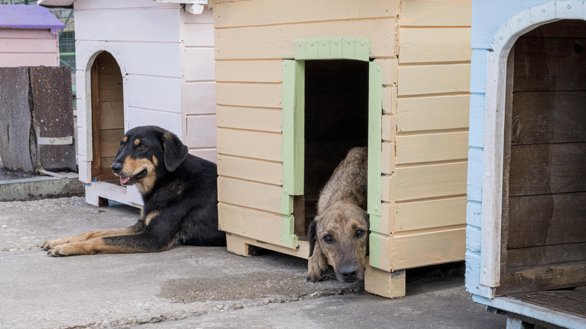

COMMUNITY VOLUNTEER!
Volunteering in a community of dog lovers can be an enriching
experience for individuals who love dogs and want to contribute to
the welfare of animals. Here are some reasons why volunteering in a
community of dog lovers is worthwhile:
-
Help dogs in need: Volunteering in a dog-loving community is a
great way to help dogs in need. You can assist in caring for
dogs, training them, and even finding them permanent homes. By
volunteering, you can make a difference in the lives of dogs and
improve their well-being.
-
Meet like-minded individuals: Volunteering in a dog-loving
community allows you to meet people who share your love for
dogs. You can make new friends, learn from each other, and have
fun working together towards a common goal.


-
Gain experience: Volunteering in a dog-loving community is an
excellent opportunity to gain experience in animal care,
training, and welfare. You can learn new skills that can benefit
you in other areas of your life, such as empathy, compassion,
and teamwork.
-
Make a positive impact: Volunteering in a dog-loving community
enables you to make a positive impact in your community. You can
help raise awareness of animal welfare issues, promote
responsible pet ownership, and encourage others to get involved
in animal welfare.
-
Feel good: Volunteering can be a fulfilling experience that
provides a sense of purpose and achievement. You can feel good
knowing that you are making a difference in the lives of animals
and contributing to the greater good of society.



In conclusion, volunteering in a community of dog lovers is a
fantastic way to help dogs in need, meet like-minded individuals,
gain experience, make a positive impact, and feel good. Whether you
have experience working with dogs or not, there are always
opportunities to contribute and learn in a dog-loving community. So
why not give it a try and see how you can make a difference in the
lives of dogs and the people who love them?